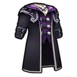

Vestuário da meia-noite
Roupas · Tier 7 · Nível 20
Realize o seu sonho de ser o mago mais bonito do baile.
Atributos
Defesa
125
Economia
Valor
70.000
Tempo de fabricação
1h 30min
XP do comerciante
22.000
Trabalhadores: Alfaiate 17, Feiticeiro 13
Receita


Marcos do projeto
7
Tempo de fabricação -25%
18
-28 Couro
32
Desbloqueia projeto: Vestimenta de xamã
50
Valor +25%
80
Chance de qualidade +1